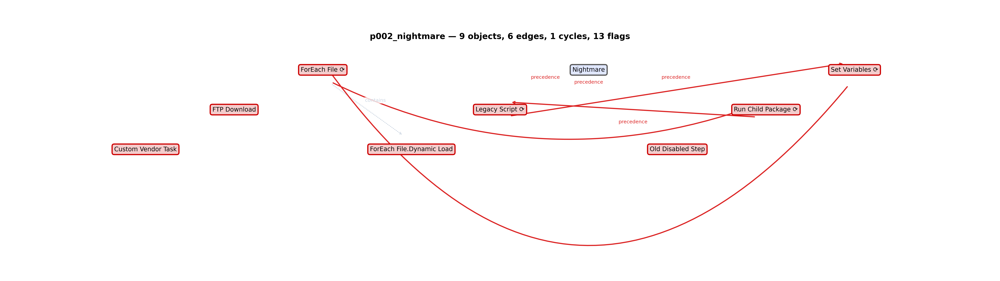
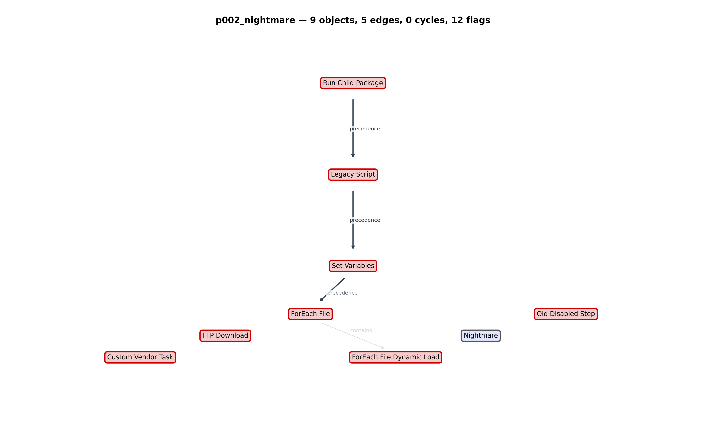

The problem
SSIS packages are XML soup: tasks, containers, precedence constraints, expressions and connections — all invisible until you open the designer. Script tasks hide .NET code, expressions decide flow at runtime, and project-level connection strings live in .conmgr files outside the package. Before anyone can price a re-platform (ADF, Fabric, dbt, Python), somebody spends days just answering: what does this package actually do?
PackageTriage answers that in seconds — from the .dtsx file alone. No SSIS runtime is needed; credentials are masked before parsing, and the whole run executes offline inside the customer's own network.
How it works
- Sniff — detects a
.dtsxfile or a directory of packages - Sanitize — passwords, connection strings and tokens are masked in the raw XML before parsing
- Ingest — executables, precedence constraints, data-flow
components, SQL statements and connection references come straight from the
XML; GUID-based references are resolved against adjacent
.conmgrfiles - Transform — Tarjan cycle detection on precedence edges, topological layering, and severity-graded review flags: scripts, runtime expressions, conditional precedence, loops, event handlers, child packages, project connections, dynamic SQL, external integrations, dead tasks
- Render — a markdown report, a mermaid + PNG control-flow diagram, and an Excel workbook where each finding is a row with a decision column
- Decide — every warn flag becomes a numbered decision in
decisions.json. Ignore a task or an edge and the graph is recomputed — cycles visibly break. The review queue isn't a report about the migration, it is the migration - Proposals (opt-in) — a backend interface can suggest resolutions. Code verifiers check every suggestion; the AI proposes, code verifies, a human decides
Result on a real package — WideWorldImporters
Try it live — decide the actual flags and break a real cycle in your browser →Microsoft's sample ETL project (wwi-ssis): the 880 KB DailyETLMain.dtsx through the pipeline in ~2 seconds.
- 139 objects · 329 edges — tasks, containers, data flows and connections mapped
- 13 sequence containers with nested executables — the real structure, not a flat task list
- 15 expression-driven tasks — runtime values a re-platform cannot guess
- 2 project-level connections — strings live in .conmgr files, resolved via DTSID and flagged
- 59 findings — 17 numbered decisions in the queue plus 42 context rows



Now building — follow along
The honest state of the project — verified on Microsoft's own sample ETL package, extended piece by piece.
- Done: decisions.json + apply loop — ignore a task or precedence edge and the graph rebuilds without it (~1 s)
- Done: real-package validation — WideWorldImporters DailyETLMain, 43 findings including expression-driven flow and project-level connections
- Done: synthetic nightmare fixture — all 13 flag rules including a deliberate precedence cycle
- Next: data-flow component granularity — column lineage inside a data flow deserves its own provenance
- Next: package-to-package dependency map — exec package tasks already flag the boundary
Why not the existing approach?
The status quo is a senior consultant with Visual Studio and the SSIS designer open, clicking through tasks one by one. PackageTriage inverts that: the deterministic engine does the inventory — same input, same output — and produces an auditable artefact instead of a verbal estimate. The AI layer is deliberately boxed in: it may propose resolutions, but code verifiers check every proposal before a human sees it.
Design choices
Provenance is structural: what the XML states, what the engine infers, and what it cannot see are separate channels — a reviewer can always tell what the engine knows from what it guesses. The engine is deterministic and offline-capable: no SSIS runtime, no telemetry, designed to run inside a customer's perimeter so packages never leave their environment.
The code is private (commercial prototype), but the project deck is here: English PDF — and a how-to-use guide: quickstart PDF. Stack: Python · SSIS XML/DTS namespaces · openpyxl · matplotlib · LLM proposals behind a mockable backend interface.